This document covers the configuration management and dependency injection (IoC) system that forms the foundation of the signals platform. The system provides centralized configuration through environment variables and a custom IoC container that manages service lifecycles and dependencies across the entire application.
For information about application startup and bootstrap processes, see Application Entry Points. For details about specific service implementations and their roles, see the relevant subsystem documentation such as Signal Processing Pipeline and External Service Integrations.
The platform uses a centralized configuration system based on environment variables with sensible defaults. All configuration parameters are defined in a single module and categorized by functionality.
The configuration system organizes parameters into logical groups:
| Category | Purpose | Key Parameters |
|---|---|---|
| Database | MongoDB and Redis connections | CC_MONGO_CONNECTION_STRING, CC_REDIS_HOST, CC_REDIS_PORT |
| External APIs | Third-party service credentials | CC_GROK_API_KEY, CC_MASTODON_ACCESS_TOKEN, CC_TELEGRAM_TOKEN |
| Trading Parameters | Ladder trading configuration | CC_LADDER_TRADE_REVENUE, CC_LADDER_STEP_PERCENT, CC_LADDER_BUY_USDT |
| Feature Flags | Application module toggles | CC_ENABLE_SIGNAL_APP, CC_ENABLE_WALLET_APP, CC_ENABLE_CHAT_APP |
| TTL Settings | Cache and report lifetimes | CC_LONG_RANGE_REPORT_TTL, CC_SHORT_RANGE_REPORT_TTL |

The platform implements a custom IoC container system using TypeScript symbols for type-safe service resolution. The system follows a registration-then-resolution pattern with automatic initialization.

The dependency injection system uses a three-phase approach: symbol definition, service registration, and instance resolution.

The main IoC container aggregates all service categories into a single object that provides type-safe access to dependencies:

Services are organized into logical categories that reflect the application's domain boundaries and technical layers.
Core infrastructure services provide fundamental capabilities required across the application:
| Service | Symbol | Purpose |
|---|---|---|
BootstrapService |
bootstrapService |
Application initialization and startup |
ErrorService |
errorService |
Centralized error handling and logging |
RedisService |
redisService |
Redis connection and caching operations |
MongooseService |
mongooseService |
MongoDB connection and ODM |
BinanceService |
binanceService |
Binance API integration for market data |
JwtService |
jwtService |
JWT token generation and validation |
LicenseService |
licenseService |
License key validation |
WebhookService |
webhookService |
Webhook notification handling |
Specialized services for technical analysis calculations:

The system distinguishes between global reports (shared) and private/public reports (instance-specific):
| Service Type | Purpose | Examples |
|---|---|---|
| Global Reports | Shared across all users | SignalReportService, BalanceReportService, HumanReportService |
| Private Reports | User-specific instances | LongRangeReportPrivateService, MastodonSearchReportPrivateService |
| Public Reports | Public-facing instances | LongRangeReportPublicService, VolumeDataReportPublicService |
Services are consumed throughout the application using the global IoC container or direct injection patterns.
The IoC container is made globally available, allowing services to access dependencies anywhere in the application:
// Global access pattern used throughout the codebase
globalThis.ioc.signalLogicService.execute(...)
globalThis.ioc.binanceService.getCurrentPrice(...)
Services integrate configuration parameters through direct imports and dependency injection:

The configuration and dependency injection system provides a robust foundation that enables loose coupling, testability, and maintainable service organization across the entire cryptocurrency trading platform.